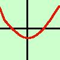

| La parabola si puo' presentare nella forma:  y = ax2
y = ax2
Per tracciarla basta ricordare che si tratta della parabola con vertice nell'origine e con concavita' (come nella figura) verso l'alto se a > 0, altrimenti la concavita' e' verso il basso  Se invece e' nella forma y = ax2 + c allora e' come la precedente ma il vertice e' spostato sulla verticale della quantita' c dall'origine (nella figura a fianco c e' negativo) Per la forma piu'generale y = ax2 + bx + c invece, conviene seguire questo metodo:
la forma y = ax2 + bx puoi trattarla come la formula completa ricordando che l'intersezione con l'asse delle y ed una delle intersezioni con l'asse x sono entrambe nell'origine degli assi. Regola generale: quando una funzione non ha il termine noto significa che passa per l'origine degli assi sapresti dire perche'? |

|

|

|

|